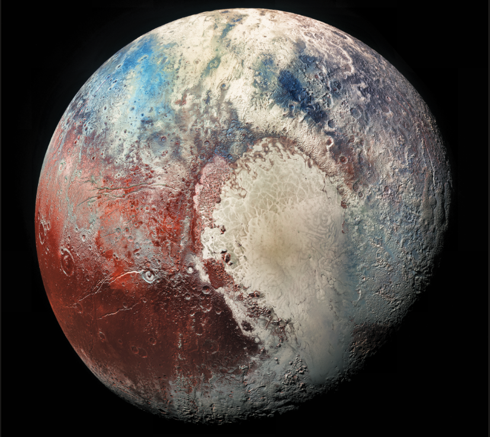

Pluto
Pluto is a dwarf planet located in the outer regions of the solar system. It was once considered the ninth planet but was reclassified in 2006 due to its size and orbit.
Pluto is very small and cold, with a surface made mostly of ice. It has a thin atmosphere and takes a long time to orbit the Sun.

Facts About Pluto
- Pluto is classified as a dwarf planet.
- It was reclassified from a planet in 2006.
- Pluto has five known moons.
- It takes about 248 Earth years to orbit the Sun.
- Pluto is extremely cold due to its distance from the Sun.